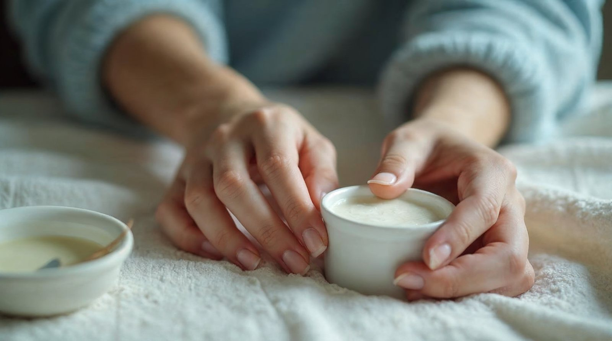

이종호 한의사 감수좋은꿈참사랑한의원 대표원장 (한의사 면허번호 19769)발행 2026-11-24 · 수정 2026-11-26
이 글의 차례
잠을 못 자면 피부부터 티가 난다는 말이 있습니다. 실제로 잠이 부족한 시기에 피부가 푸석하고 트러블이 늘었다는 분이 많습니다. 잠과 세안, 식사와 스트레스를 함께 점검하고, 크고 아픈 염증이나 흉터가 남는 경우는 피부과 진료가 먼저입니다.
왜 이런 불편이 생길 수 있나요
- 잠자는 동안 피부가 회복하는데, 잠이 부족하면 피부 장벽 회복이 더뎌질 수 있는 것으로 알려져 있습니다.
- 잠이 부족하고 스트레스가 쌓이면 피지와 염증 반응이 늘어날 수 있습니다.
- 늦게까지 깨어 있으면 야식과 단 음료가 늘고, 세안과 보습을 건너뛰기 쉽습니다.
- 피곤할 때 얼굴을 자주 만지거나 짜는 습관도 트러블을 키울 수 있습니다.
먼저 이렇게 여쭙니다
- 피부가 푸석하고 트러블이 난 것이 잠이 부족한 시기와 겹치나요?
- 하루 몇 시간 주무시고 몇 시에 자나요?
- 세안과 보습, 사용하는 화장품은 어떤가요?
- 식사와 단 음료, 야식, 스트레스는 어떤가요?
일상에서 먼저 해 볼 수 있는 것
- 수면 시간과 잠자리 시각을 일정하게 하기
- 순한 세안제로 부드럽게 씻고 보습하기
- 베개 커버와 수건을 자주 바꾸기
- 얼굴을 만지거나 짜지 않기
- 새 화장품은 한 번에 하나씩만 바꿔 보기
한의원에서 함께 살필 수 있는 경우
- 잠이 부족한 시기마다 트러블이 반복되는 경우 수면 리듬과 생활을 함께 살핍니다.
- 스트레스가 쌓이면 피부가 예민해지는 경우 긴장과 잠, 소화를 함께 살핍니다.
- 야식과 단 음식이 늘면 트러블이 생기는 경우 식사 습관을 함께 살핍니다.
좋은꿈참사랑한의원에서는 피부가 달라진 시기와 생활 이야기를 먼저 듣고 몸 상태를 함께 살핍니다. 그 뒤 잠과 식사 리듬을 정리하는 계획과 침·한약 상담 등을 상태에 맞춰 정하며, 피부과 치료 중이라면 그 치료와 함께 할 수 있는지 먼저 확인합니다.
얼마나 지켜보고 언제 진료를 받으면 좋을까요
- 며칠 밤을 설친 뒤 생긴 푸석함과 작은 뾰루지라면, 잠자리 시각을 일정하게 맞추고 세안과 보습을 단순하게 하며 2주 정도 지켜볼 수 있습니다.
- 잠을 되찾았는데도 3~4주 넘게 트러블이 계속 올라오거나 같은 자리에 반복된다면 피부과에서 피부 상태를 먼저 확인하고, 생활과 몸 상태도 함께 살펴보시길 권합니다.
- 잠들기 어려운 날이 일주일에 세 번 넘게, 한 달 이상 이어진다면 피부보다 잠 자체를 먼저 살펴볼 필요가 있습니다.

이런 경우를 예로 들 수 있습니다
- 예를 들어 마감 기간에 새벽 두세 시에 자는 날이 이어지며 턱선과 입 주변에 뾰루지가 몰린 경우, 늦은 야식과 카페인, 얼굴을 괴는 습관이 겹쳤는지 함께 여쭙습니다.
- 예를 들어 아기를 돌보느라 밤에 자주 깨는 시기에 피부가 당기고 각질이 일어나는 경우, 잠의 길이뿐 아니라 물 마시는 양과 끼니, 실내 난방과 건조함을 함께 봅니다.
- 예를 들어 교대 근무로 잠자는 시간이 매주 바뀌며 피부가 예민해진 경우, 근무 일정 안에서 지킬 수 있는 잠의 고정 시간을 함께 찾아봅니다.
스스로 점검해 보세요
- 하루 수면 시간이 6시간보다 짧은 날이 일주일에 세 번 넘는다
- 잠자리에 드는 시각이 날마다 두 시간 이상 차이 난다
- 자기 전 한 시간 안에 휴대폰을 오래 본다
- 밤 10시 넘어 야식이나 단 음료를 먹는 날이 많다
- 피곤하면 세안이나 보습을 건너뛴다
- 무의식적으로 얼굴을 만지거나 짠다
- 아침에 일어나도 개운하지 않은 날이 대부분이다
해당 항목이 많을수록 피부만이 아니라 잠과 생활 리듬을 함께 들여다볼 필요가 있다는 뜻으로 보시면 됩니다.
처음 오시면 이렇게 진행됩니다
접수 때 사용 중인 화장품과 세안제, 피부과에서 처방받은 약이 있다면 이름을 알려 주세요. 원장이 피부가 달라진 시기와 그 무렵의 잠·식사·일정을 여쭙고, 진맥을 기본으로 필요하다고 판단될 때 설진·복진을 더해 몸 상태를 살핍니다.
트러블 부위를 눈으로 확인하고, 크고 아픈 염증이나 빠르게 번지는 증상처럼 피부과 진료가 먼저 필요해 보이면 그렇게 안내합니다. 그 뒤 오늘 진행할 내용과 이유를 설명드리고, 잠자리 시각과 식사 리듬을 정리하는 계획과 다음 방문 간격을 정합니다.
2주 정도 수면 일기와 트러블이 생긴 날을 함께 적어 오시면 둘 사이의 연결 고리를 찾기 쉽고, 트러블이 심한 날 얼굴 사진을 찍어 두시면 진료 날 상태가 가라앉아 있어도 설명이 수월합니다. 진료시간은 평일 09:30~20:00(점심 13:00~14:00), 토·일·공휴일 09:30~15:00이라 퇴근 뒤나 주말에도 방문 일정을 잡을 수 있습니다.
이렇게 기록해 오시면 상담이 쉬워집니다
- 트러블이 생긴 날과 그 전날의 수면 시간
- 새로 바꾼 화장품이나 세안제
- 야식·단 음료를 먹은 날
- 피부과에서 처방받은 먹는 약과 바르는 약
이런 증상은 먼저 확인이 필요합니다
- 크고 단단하며 아픈 염증이 반복되거나 흉터와 색소가 남기 시작하는 경우
- 열이 나면서 얼굴이 갑자기 붓는 경우
이런 신호가 있으면 한의원보다 가까운 병원이나 응급실을 먼저 찾으세요.
관련 글
- 어른이 되어서도 턱선에 뾰루지가 반복될 때는 무엇을 먼저 살피나요?
- 수면 일기는 어떻게 쓰면 진료에 도움이 되나요?
- 잠을 못 자면 두통이 올 때는 어떻게 살피나요?

여쭙는 것
- 피부가 푸석하고 트러블이 난 것이 잠이 부족한 시기와 겹치나요?
- 하루 몇 시간 주무시고 몇 시에 자나요?
- 세안과 보습, 사용하는 화장품은 어떤가요?
생활에서 해 볼 것
- 수면 시간과 잠자리 시각을 일정하게 하기
- 순한 세안제로 부드럽게 씻고 보습하기
- 베개 커버와 수건을 자주 바꾸기
한의원에서 함께 살필 것
- 잠이 부족한 시기마다 트러블이 반복되는 경우 수면 리듬과 생활을 함께 살핍니다.
- 스트레스가 쌓이면 피부가 예민해지는 경우 긴장과 잠, 소화를 함께 살핍니다.
- 야식과 단 음식이 늘면 트러블이 생기는 경우 식사 습관을 함께 살핍니다.
먼저 확인이 필요한 신호
- 크고 단단하며 아픈 염증이 반복되거나 흉터와 색소가 남기 시작하는 경우
- 열이 나면서 얼굴이 갑자기 붓는 경우
한눈에 보는 표
| 구분 | 핵심 |
|---|---|
| 여쭙는 것 | 피부가 푸석하고 트러블이 난 것이 잠이 부족한 시기와 겹치나요? 하루 몇 시간 주무시고 몇 시에 자나요? |
| 생활에서 해 볼 것 | 수면 시간과 잠자리 시각을 일정하게 하기 순한 세안제로 부드럽게 씻고 보습하기 |
| 한의원에서 함께 살필 것 | 잠이 부족한 시기마다 트러블이 반복되는 경우 수면 리듬과 생활을 함께 살핍니다. 스트레스가 쌓이면 피부가 예민해지는 경우 긴장과 잠, 소화를 함께 살핍니다. |
| 먼저 확인이 필요한 신호 | 크고 단단하며 아픈 염증이 반복되거나 흉터와 색소가 남기 시작하는 경우 열이 나면서 얼굴이 갑자기 붓는 경우 |
자주 묻는 질문
잠을 자면 피부가 좋아지나요?
결과를 약속하지 않습니다. 충분한 잠은 피부 컨디션 관리에 도움이 될 수 있습니다.
한의원에서는 어떻게 살피나요?
피부와 함께 잠, 식사, 소화, 스트레스를 묻고 생활 전체의 리듬 속에서 살핍니다.
피부과 약과 함께 진료받아도 되나요?
네, 쓰고 있는 약을 모두 알려 주시면 함께 할 수 있는지 확인합니다. 약은 임의로 끊지 마세요.
좋은꿈참사랑한의원은 재진 때 지난번 이야기부터 이어서 여쭙니다. 진료시간과 예약은 오시는 길에서 확인하세요.
어디서 상담받을 수 있나요?
좋은꿈참사랑한의원은 서울 동작구 만양로2길 2 신성빌딩 3층·5층(서울 동작구 상도동, 7호선 상도역 3번 출구 근처)에 있습니다. 한의사 3명(이종호 대표원장, 조영기 수석진료원장, 정원영 진료원장)이 진료합니다. 진료시간은 평일 09:30~20:00(점심 13:00~14:00), 토·일·공휴일 09:30~15:00이며, 방문 전 전화로 확인을 권합니다. 예약은 네이버 예약, 카카오톡 상담, 전화 02-815-7510로 받습니다.
이 글은 일반적인 건강 정보이며 개인의 진단이나 치료를 대신하지 않습니다. 증상이 있거나 복용 중인 약이 있다면 진료를 통해 확인하세요. 치료 효과는 개인마다 다를 수 있습니다.
작성 기준: 일반적으로 알려져 있는 건강 정보를 참고해 정리했습니다(대표원장 감수). 증상 기록은 1~2주 동안 하루 1회, 비슷한 시간에 적어 오시면 지난 상태와 비교하기 쉽습니다.